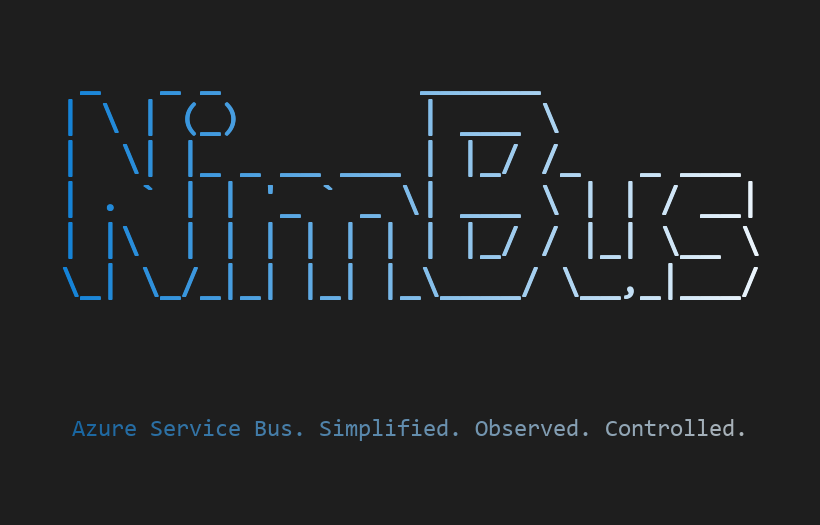

Azure Service Bus. Simplified. Observed. Controlled.
The operational platform for Azure Service Bus — session-ordered messaging with full lifecycle visibility, error recovery, and a management UI.
Service Bus gives you the transport. NimBus gives you everything else.
Messages go in, maybe come out. No audit trail, no lifecycle tracking, no way to see what happened to a specific message without digging through logs.
Dead-lettered messages pile up. Reprocessing means writing scripts, peeking at queues, and hoping you don't make it worse. There's no "resubmit" button.
Service Bus sessions exist, but implementing FIFO ordering with failure recovery, deferral, and replay is months of custom engineering.
Every team writes their own SDK, retry logic, health checks, and monitoring. The same problems solved differently across every project.
NimBus wraps Azure Service Bus with a complete operational model.
A clean SDK that handles the hard parts so your team focuses on business logic.
Full lifecycle visibility from publish to completion, failure, or dead-letter.
A management UI and CLI that let your ops team act, not just observe.
Define events as clean DTOs. Publish with one line. Handle with standard DI.
[Description("Customer places a new order.")]
[SessionKey(nameof(OrderId))]
public class OrderPlaced : Event
{
[Required]
public Guid OrderId { get; set; }
[Required]
public Guid CustomerId { get; set; }
public decimal TotalAmount { get; set; }
}public class OrderPlacedHandler
: IEventHandler<OrderPlaced>
{
public Task Handle(
OrderPlaced message,
IEventHandlerContext context,
CancellationToken ct)
{
// Your business logic here.
// NimBus handles retries, tracing,
// dead-lettering, and session ordering.
return Task.CompletedTask;
}
}// Two lines. That's it.
var order = new OrderPlaced
{
OrderId = Guid.NewGuid(),
CustomerId = customerId,
TotalAmount = 249.95m
};
await publisher.Publish(order);// Publisher
services.AddNimBusPublisher("StorefrontEndpoint");
// Subscriber with middleware
services.AddNimBus(nimbus => {
nimbus.AddPipelineBehavior<LoggingMiddleware>();
nimbus.AddPipelineBehavior<MetricsMiddleware>();
});
services.AddNimBusSubscriber("BillingEndpoint", sub => {
sub.AddHandler<OrderPlaced, OrderPlacedHandler>();
});FIFO ordering per entity with automatic failure recovery. The hardest problem in messaging, solved.
Every event declares its ordering key via [SessionKey].
Messages with the same session ID are processed strictly in order.
When a handler fails, NimBus blocks the session — subsequent messages are automatically deferred. No messages are lost, no ordering is violated.
After recovery (resubmit or skip via the WebApp), deferred messages are replayed in the original FIFO order. Other sessions continue processing in parallel, unaffected.
Without session ordering, a payment confirmation can be processed before the order creation. A retry can execute while the original is still being handled. NimBus prevents these ordering violations at the platform level — your handlers don't need to worry about it.
Six components. One coherent platform.
Publisher and subscriber clients with DI, middleware pipeline, retry policies, and transactional outbox.
Session-enabled topics and subscriptions with forwarding rules, dead-letter queues, and scheduled delivery.
Azure Functions service that tracks every message outcome and writes audit state to Cosmos DB.
Persistent storage for message state, audit trails, endpoint metadata, and metrics aggregation.
React SPA with REST API and SignalR. Resubmit, skip, inspect, and manage messages across all endpoints.
Command-line tool for Azure infrastructure provisioning, Service Bus topology management, and deployment.
NimBus isn't competing on features. It's competing on the operational model that Service Bus doesn't give you.
| Capability | Raw Service Bus | NimBus | MassTransit | NServiceBus |
|---|---|---|---|---|
| Publisher/subscriber SDK | Build your own | Included | Included | Included |
| Session-based FIFO ordering | Manual implementation | Automatic with deferral and replay | Limited | Limited |
| Management UI | Azure Portal only | Full WebApp with resubmit/skip | None built-in | ServicePulse (paid) |
| Message audit trail | None | Centralized Resolver + Cosmos DB | None built-in | ServiceControl (paid) |
| Error recovery workflow | Manual DLQ scripts | One-click resubmit/skip in WebApp | Manual | ServicePulse (paid) |
| Topology provisioning | Manual or Bicep/Terraform | Declarative via CLI | Auto-provisioning | Installers |
| Transactional outbox | Build your own | SQL Server, transparent | Multiple stores | Multiple stores |
| OpenTelemetry tracing | Basic SDK telemetry | Full W3C TraceContext propagation | Included | Included |
| Azure-native depth | It is Azure | Sessions, DLQ, scheduling, forwarding | Transport abstraction | Transport abstraction |
| License | N/A | MIT (free) | Apache 2.0 (free) | Commercial (paid) |
Running in enterprise environments since 2022.